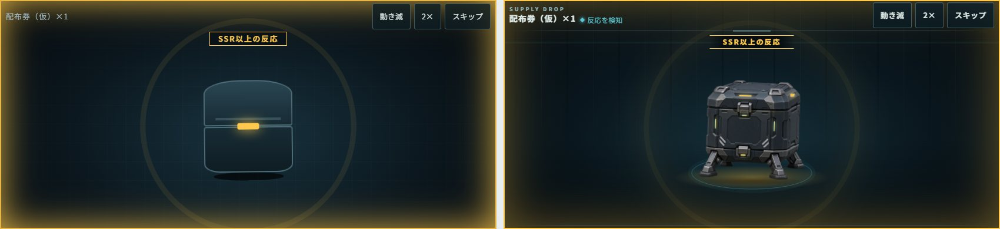
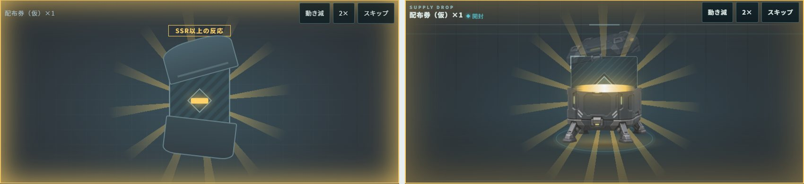
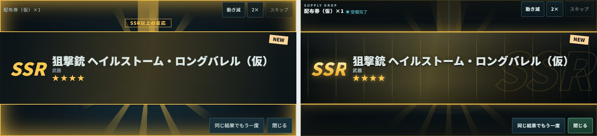
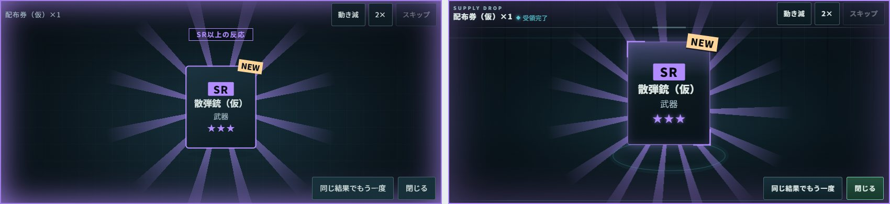
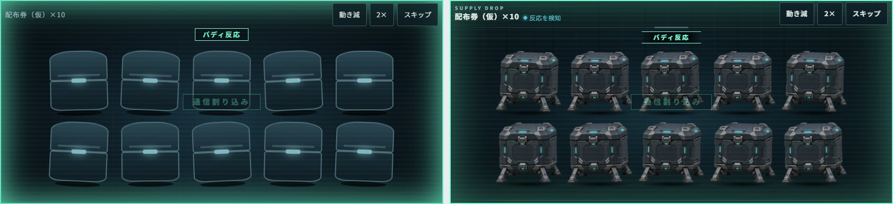
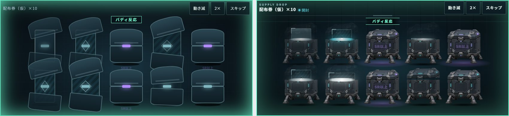
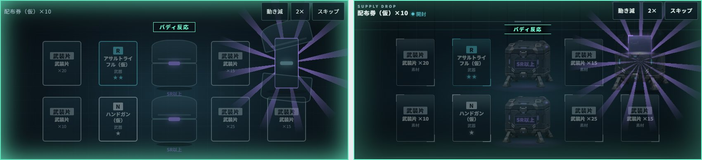
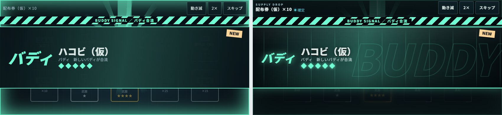
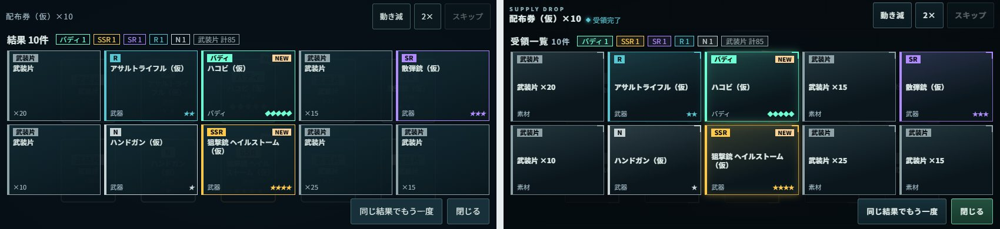

補給ポッド演出：旧試作（左）と新モジュール（右）
同じ確定済みの結果・同じ場面（時間軸の同じ区切り）を 844×390 の Chrome で撮影して並べた画像です。確率・報酬は仮の入力で、仕様を示すものではありません。
左：旧試作 prototypes/gacha-reveal（2026-11-08）右：design/resume-ui-20261110/supply-reveal
1連 SSR：予兆下限だけを示す金の反応。新版はポッド素材の灯が反応色に変わり、足元が照らされる
1連 SSR：開封新版は蓋が継ぎ目から跳ね上がり、開封口から光が漏れて、カードが中から持ち上がる
1連 SSR：カットインの停止点背景の大きなレア度表記と流れる線を追加。名前の上下2分割、星、NEWは継承
1連 SR：最後カードを大きく持ち上げて表示。開封後は予兆の表示を消す
10連：予兆個々のポッドは中立のまま、画面の縁と表示で最高段階の下限だけを示す
10連：低レアの一斉開封新版は蓋の動きを小さくして隣と重ならないようにし、残ったSR以上は前面パネルに「SR以上」
10連：SR以上の個別開封開ける1つを拡大し、他を暗くする
10連：バディのカットイン（停止点）縞の帯が弾んで着地してから面が開く
10連：受領一覧武装片は名前に数量を出して段階表示との重複をなくした。名前は枠の中で縦中央に置く